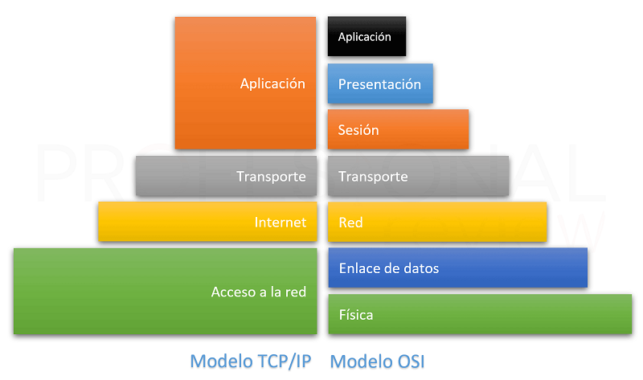

MODELO OSI
Las capas del modelo OSI describen el proceso de transmisión de los datos dentro de una red. Una pirámide de 7 niveles es uno de los modos que mejor ilustran la estructura del Modelo OSI, cada uno numerado de abajo hacia arriba; también esta estructura en capas es conocida como: la pila OSI.
Las capas que propone el Modelo OSI son:
Capa 7 o de Aplicación: la más cercana al usuario final. Interactúa directamente con el software y las aplicaciones que se emplean para la comunicación en red.
Capa 6 o de Presentación: especifica el formato, estructura de los datos, codificación, compresión y otros, asegurándose que lo que se envía de un dispositivo a otro pueda ser interpretado.
Capa 5 o de Sesión: responsable de establecer, mantener, administrar, y terminar sesiones de comunicación entre las aplicaciones de diferentes dispositivos.
Capa 4 o de Transporte: proporciona servicios para segmentar, transferir y volver a ensamblar los datos.
Capa 3 o de Red: responsable del direccionamiento, enrutamiento y definición de las mejores rutas posibles para el envío de los datos.
Capa 2 o de Enlace: define el formato de los datos para ser transmitidos a través de los medios físicos. Indica como acceder a la dirección física, el manejo de errores y el control del flujo.
Capa 1 o Física: define especificaciones como las condiciones eléctricas y mecánicas necesarias para activar, mantener y desactivar las conexiones físicas entre los dispositivos.